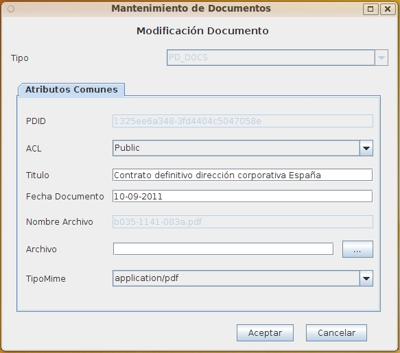

Este formulario permite modificar el documento seleccionado introduciendo todos los metadatos comunes y los propios del tipo documental elegido. No permite elegir el tipo documental, que no puede cambiarse tras dar de alta el documento, y permite modificar la seguridad (ACL). Los metadatos específicos de ese tipo aparecen en otra solapa (en la versión Swing) o en una zona por debajo (en la versión Web), además de los metadatos comunes a todos los documentos OPD.
El usuario debe tener bloqueado (Checkout) el documento para poder editarlo. La edición incluye tanto cambios en los metadatos como actualización del documento. Cuando se complete la edición, debe desbloquearse (Checkin) para publicar los nuevos valores del documento y guardar una nueva versión. Hasta ese momento, solo el usuario podrá ver el borrador. Si se desea anular todo lo realizado, basta cancelar el bloqueo (Cancel Checkout), volviendose a los valores vigentes hasta ese momento.
La lista de opciones a elegir para los distintos metadatos puede variar según los permisos del usuario.
Debe introducirse la información siguiente:

Los campos obligatorios para cada tipo documental apareceran resaltados. Al situarse el cursor o ratón sobre cada campo, aparecerá un mensaje emergente o un texto en la banda de inferior del formulario con información sobre el campo y (en el caso de los campos de tipo fecha u hora) el formato esperado. Los campos de tipo fecha/hora deben ser valores válidos y seguir el formato esperado, en otro caso el campo se limpia y el valor se rechaza.
En caso de producirse un error (carencia de permisos del usuario, error de comunicaciones, fecha incorrecta, etc), la operación se cancela y se comunicará al usuario el motivo del error.
Ver: CheckIn (Bloquear Documento para editar) y CheckOut (Confirmar cambios en Documento Bloqueado) y Cancel Checkout (Cancelar Cambios en Documento)